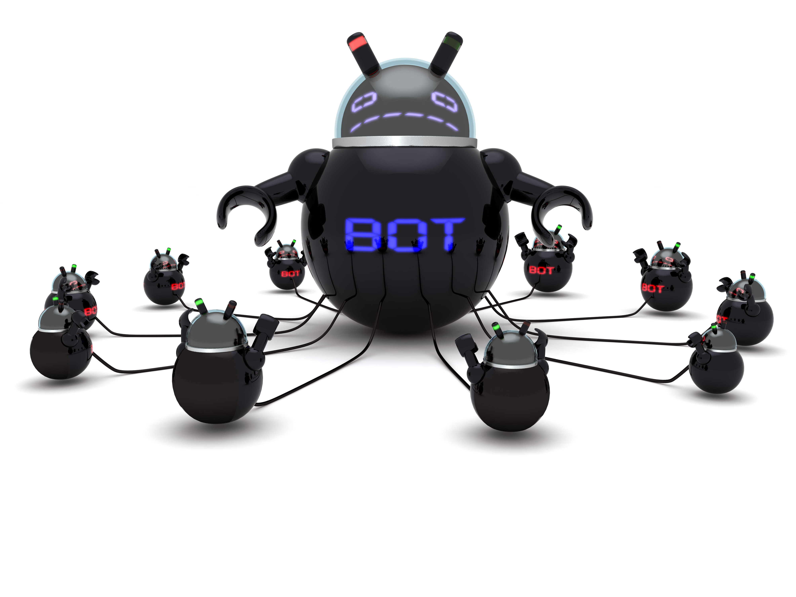

A botnet is a number of Internet-connected computers communicating with other similar machines in an effort to complete repetitive tasks and objectives. This can be as mundane as keeping control of an Internet Relay Chat (IRC) channel, or it could be used to send spam email or participate in distributed denial-of-service attacks. The word botnet is a combination of the words robot and network. The term is usually used with a negative or malicious connotation.
A botnet is created and used to send email spam.

How a botnet works: